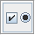
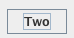
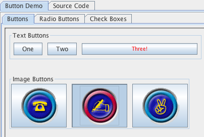

| S.No |
Test |
Scenario |
| 1 |
Button Demo |
- Tab until the Button Demo icon  has focus. Press 'space' to
choose.
- Tab until the "Button Demo" tab has focus. Press 'space'. Press 'tab'.
- Use the arrow keys to navigate between "Buttons", "Radio Buttons", and "Check Boxes".
- Tab to enter the demo pane. Tab & Shift-Tab to move between each button.
- Press 'space' to trigger (i.e. "press") a button.
- Repeat steps 1 through 5 for the Radio Button & Check Boxes tabs.
|
| Expected Result |
- Verify that as you navigate, the focus is shown, e.g.

- As you press 'space' to trigger each button, verify that you see each button visually depress.
e.g.:

|
| Note: actual component appearence may vary depending on look and
feel. |